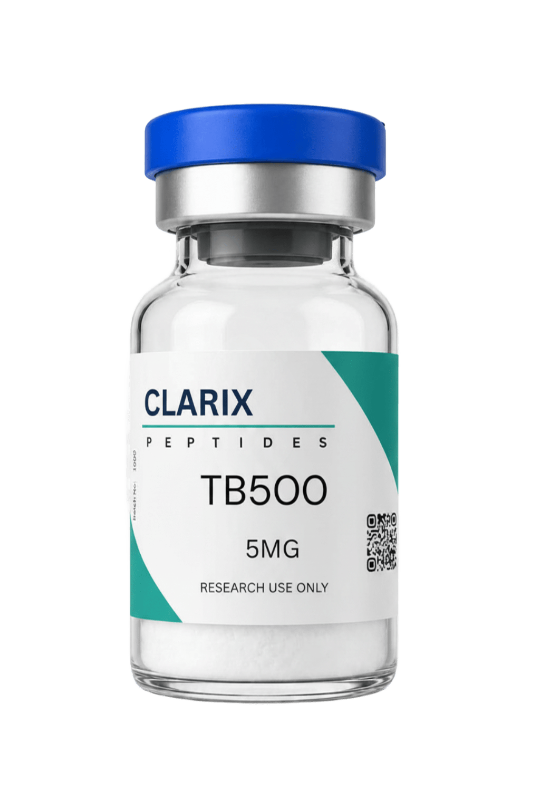

TB-500 is one of the most studied synthetic peptides in the context of tissue repair and cellular regeneration. Derived from the active region of Thymosin Beta-4, a peptide found in virtually every nucleated cell in the body, TB-500 has been the subject of a considerable number of pre-clinical studies examining its role in healing across multiple tissue types. This overview gives researchers the foundational information they need before working with the compound.
TB-500 is a synthetic analogue of Thymosin Beta-4, a 43-amino acid peptide that plays a key role in actin sequestration within cells. The compound has a molecular formula of C212H350N56O78S and a molecular weight of approximately 4963 Da. It is structurally based on the actin-binding domain of Thymosin Beta-4, specifically the LKKTETQ sequence identified as central to its biological activity.
Unlike the full Thymosin Beta-4 molecule, TB-500 focuses on this active region, which has made it a practical and widely available research compound. It is supplied in lyophilised powder form for laboratory reconstitution.
The primary mechanism that has attracted research attention is TB-500's role in regulating actin dynamics within cells. Thymosin Beta-4 and its analogues bind to G-actin (monomeric actin) and prevent its polymerisation into F-actin filaments. This regulation of the actin cytoskeleton influences a broad range of cellular processes including migration, division, and signal transduction. In the context of wound healing and tissue repair, actin regulation is critical to how cells move into damaged areas and reorganise around injury sites.
Studies have demonstrated that TB-500 promotes endothelial cell migration and blood vessel formation, both of which are key components of the tissue repair cascade. Its angiogenic activity has been observed in several pre-clinical models, and the relationship between actin regulation and motility is thought to be a central driver of this effect. Enhanced vascular ingrowth to damaged tissue creates the conditions necessary for sustained healing at the cellular level.
Research has also documented anti-inflammatory activity associated with TB-500 administration in rodent models. Reduction in inflammatory cytokine signalling has been observed alongside its tissue-level effects, suggesting the compound may act through more than one pathway simultaneously. This dual activity of repair promotion and inflammation modulation is a characteristic that has made it a compound of interest across several research disciplines.
The most extensive body of pre-clinical research into TB-500 has examined its effects on skeletal muscle damage models. Studies involving induced muscle lacerations, contusions, and tendon injuries have observed accelerated functional recovery and reduced fibrotic scarring compared to controls. The compound's ability to promote satellite cell activation and organise the extracellular matrix around the injury site are considered key contributors to these outcomes.
A notable area of interest has been the compound's potential in cardiac research. Studies using rodent models of myocardial infarction have reported cardiomyocyte survival benefits and reduced scar tissue formation following TB-500 administration. The angiogenic and anti-apoptotic properties observed in these models have attracted attention from researchers investigating cardiac regeneration strategies.
Beyond musculoskeletal applications, studies have examined TB-500 in ophthalmic models — particularly corneal wound healing, where its ability to promote epithelial cell migration has been documented. Neural research has also investigated its neuroprotective potential following traumatic injury, with early pre-clinical results suggesting benefits related to inflammation control and axonal regrowth in controlled injury models.
HPLC-verified, 99%+ purity. Certificate of Analysis included. Available in 5mg and 10mg. Fast UK dispatch.
TB-500 is reconstituted using bacteriostatic water or sterile saline. Given its slightly larger molecular size compared to shorter peptides, dissolution can take a few minutes longer than expected. Allow the reconstituted vial to sit at room temperature for 5 to 10 minutes and swirl gently until the solution is clear. Sonication in a water bath can assist if the peptide does not fully dissolve within this window.
As with all lyophilised research peptides, TB-500 should be stored at minus 20 degrees Celsius in its dry form. Reconstituted solutions remain stable at 4 degrees Celsius for approximately 28 days when stored in bacteriostatic water. Avoid freeze-thaw cycles on reconstituted material. Keep vials away from light, particularly UV exposure, which can degrade the peptide over time.